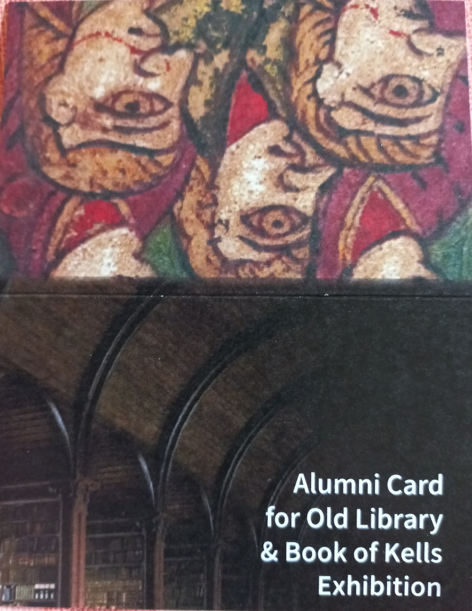

Studio research
Experimental
Colour tests, digital processes, material accidents and unresolved visual research.
20 works
Experimental work 003 Experimental work · Studio experiments
 Experimental work 001
Experimental work 003
Experimental work 001
Experimental work 003
 Experimental work 005
Experimental work 005
 Experimental work 007
Experimental work 007
 Wp 1660637866920.
Wp 1660637866920.
 Experimental work 011
Experimental work 011
 2 1
2 1
 Pxl 20220228 205525401 2
Pxl 20220228 205525401 2
 Pxl 20211204 181416841.mp2 1
Pxl 20211204 181416841.mp2 1
 Pxl 20211204 1809041673 2
Pxl 20211204 1809041673 2
 Pxl 20211204 1823471543 1
Pxl 20211204 1823471543 1
 Pxl 20220307 213111318
Pxl 20220307 213111318
 Experimental work 025
Experimental work 025
 421843527 10163269157528275 6989314647941066488 n
421843527 10163269157528275 6989314647941066488 n
 Experimental work 028
Experimental work 028
 Image editor output image 1311905361 1683649024777
Image editor output image 1311905361 1683649024777
 Pxl 20220124 175122330 edited 1
Pxl 20220124 175122330 edited 1
 Pxl 20220207 211710190
Pxl 20220207 211710190
 Pxl 20211204 181949428.mp2 3 edited
Pxl 20211204 181949428.mp2 3 edited

Alumi1